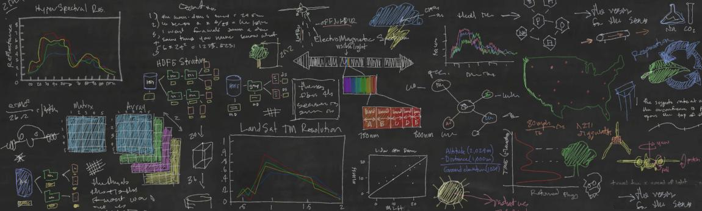

About Alpha Plot
Alpha Plot can generate different types of 2D and 3D plots (such as line, scatter, bar, pie, and surface plots) from data that is either imported from ASCII files, entered by hand, or calculated using formulas. The data is held in spreadsheets which are referred to as tables with column-based data (typically X and Y values for 2D plots) or matrices (for 3D plots). The spreadsheets as well as graphs and note windows are gathered in a project and can be organized using folders. The built-in analysis operations include column/row statistics, (de)convolution, FFT and FFT-based filters. Curve fitting can be performed with user-defined or built-in linear and nonlinear functions, including multi-peak fitting, based on the GNU Scientific Library. The plots can be exported to several bitmap formats, PDF, EPS or SVG. Scripting Console support in-place evaluation of mathematical expressions and scrtipting interface to ECMAScript like dynamic scripting language(java script). The GUI of the application uses the Qt toolkit.
Development started in 2016 as fork of SciDAVis 1.D009, which in turn is a fork of QtiPlot 0.9rc-2. Alpha Plot aims to be a tool for analysis and graphical representation of data, allowing powerfull mathematical treatment and data visualization while keeping a user-friendly graphical user interface and an ECMAScript like scripting interface for power users which can be easily automated.
Legal notice: Permission is granted to copy, distribute and/or modify this software under the terms of the GNU Free Documentation License, Version 2.0 published by the Free Software Foundation; with no Invariant Sections, with no Front-Cover Texts, and with no Back-Cover Texts.
Read MoreStable Releases
We recommend all users to download AlphaPlot from Sourceforge, GitHub or official website only. Any other download sites may contain malware or modified source code.
Latest News
-
Migration to Qcustomplot (work in progress)
-
Probability random generators (GSL)
-
Rewrite project explorer and properties